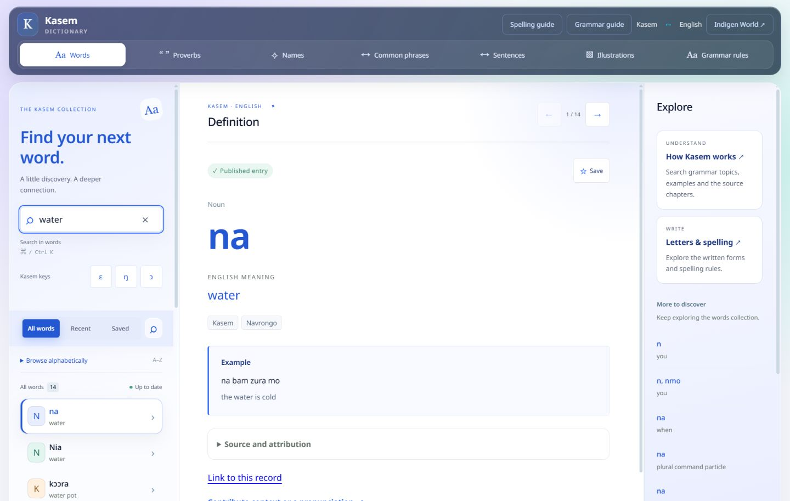
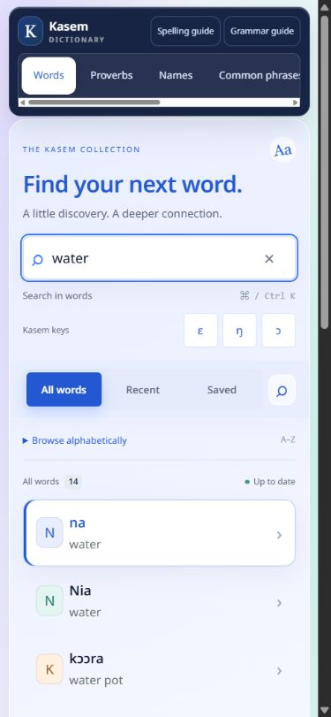
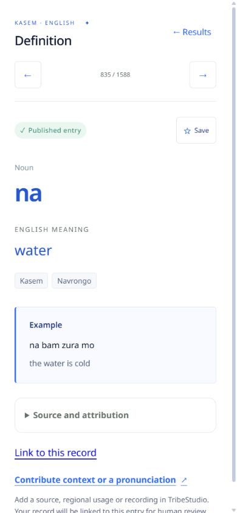
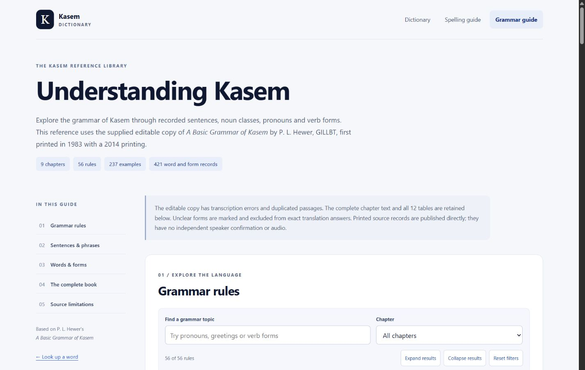
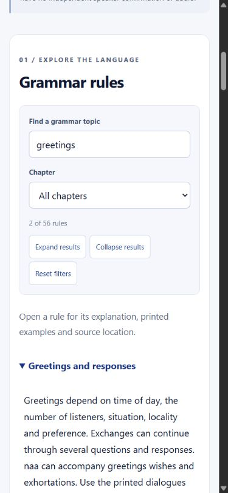

Live · October 12, 2026. These improvements are deployed on Venacula. The dictionary and grammar guide were verified after release.
Looking up a word and understanding how it works should feel connected. This update improves the Kasem Dictionary and its grammar guide, with clearer navigation, more comfortable reading and practical ways to narrow down the material you need.

Collection buttons scroll sideways so their names stay readable. Search text and important controls are larger. Shared entry links open the definition directly on a phone, and refreshing keeps your selected collection. Saved and recent lists explain that they are stored in your current browser.


The grammar guide now has a contents menu, topic search and a chapter filter. Search for a topic such as pronouns, select a chapter if needed, and expand the matching rules. If nothing matches, reset the filters or try a shorter search.

Sentence and word searches check the complete collection. Tables initially show 25 records, with a button to reveal more. Source citations open their chapter automatically, so readers can see the context behind an entry.

All nine chapters, existing rules, tables and original illustrations remain available. The guide retains its attribution to P. L. Hewer’s A Basic Grammar of Kasem, GILLBT, and its notes about transcription uncertainty. A printed example is still a printed example; these interface changes do not add speaker confirmation or audio.
Use the Kasem Dictionary or open its grammar guide. No account is needed to read the published reference. Saved entries remain specific to your browser.